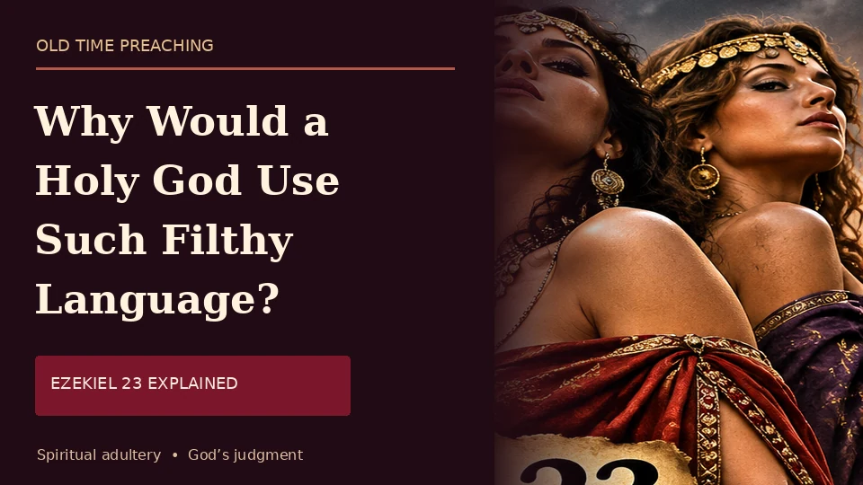

ARTICLEWhy Would a Holy God Use Such Filthy Language? Ezekiel 23:20 Explained
Why is Ezekiel 23 so graphic? A biblical examination of the two sisters, idolatry, and repentance.
Charles Spurgeon's warning about wealth, stewardship, and the Christian works left struggling for support.
Faith without works is dead (James 2:17). What good is hearing sound preaching if we are unwilling to put what we hear into practice? We seek a Christianity of genuine conviction, generous hearts and practical service—not words alone.
Discover Our Mission →Historic preaching that still speaks today.
Biblical truth, Christian living, and practical application.
Real opportunities to support faithful Christian work.
Thoughtful reviews of useful and historic Christian books.

ARTICLEWhy is Ezekiel 23 so graphic? A biblical examination of the two sisters, idolatry, and repentance.
A dramatic gospel story of a sinking ship, false hope, and Christ rescuing one helpless sinner.
An honest testimony about business failure, fatherhood, J. C. Ryle and God’s grace.
Why remembering the fallen also means examining the cause and remembering God.
Spurgeon on cheerful and proportionate Christian generosity.
Spurgeon’s warning about wealth, stewardship, and responsibility.
The 1890 sermon on Malachi 3:8 — read or listen.
An honest working business seeking practical support.
Book review on faithfulness and contentment.
No items in this category yet.